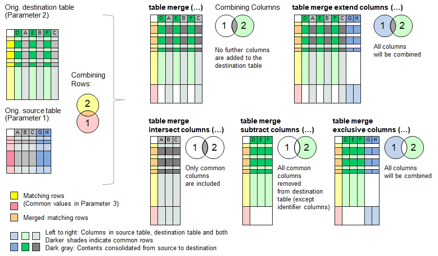

Function Names
table merge, table merge extend columns, table merge intersect columns, table merge subtract columns, table merge exclusive columnsDescription
The functions described here merge the contents of the source table into the destination table. Identifier columns can be defined for both tables in order to
identify the overlapping table rows (e.g. same first and last names).
For the merging process, the principle of union set is applied. All rows in the source tables which do not share the same identifier data as in the
destination table will be added to the end of the table. This does also apply if no identifier columns are specified (e.g. 3rd function parameter not used or {} or '' provided).
In the other case, where rows in the source table share the same identifier data as in the destination table and are considered overlapping,
the data from the source table row will be consolidated into the destination table row using available consolidation actions. The consolidation actions
work similarly like in the function table consolidate() where exactly two rows are consolidated into one row.
In case the two tables contain multiple equal values in the identifier columns (for example if only the first name has been referred), then every affecting row in the
source table will be consolidated in one row in the destination table and then checked off as 'done'. If another row in the source table has the same value, then
the next match further below in the destination table will be seeked. If the source table contains more repeated contents in the identifier column than in the
destination table, then the remaining rows will be added to the end of the destination table.
The following functions use different approaches to combine the data columns:
| table merge | No further columns are added to the destination table |
| table merge extend columns | Columns in the source table but not found in the destinationtable will be added to the target table (union set) |
| table merge intersect columns | Removes columns from the destination table if they do not exist in the source table (intersection) |
| table merge subtract columns | removes columns from destination table if they are found in the source table, but keeps the identifier columns. |
| table merge exclusive columns | Removes columns found in both source and destination table, but keeps the identifier columns (exclusive OR). |

Typical applications:
- Gathering information collected from different sources
- Merger and acquisitions
Note: If the destination table does not yet exist, or if the table is entirely empty (i.e. no header inside), then the data in the source table will be copied into the destination table.
Call as: procedure or function
Restrictions
Indirect parameter passing is disabled
Parameter count
2-6 (Max 3 for function names 'table merge subtract/exclusive columns')
Parameters
| No. | Type | Description |
|---|---|---|
| 1. input |
string | Name of existing source table |
| 2. input |
string | Name of destionation table |
| Opt. 3. input |
table columns | Identifier Columns The identifier columns are used to match common data in both tables.
Rows with same identifier data in both source and destination tables
are considered as overlapping rows. The data in overlapping rows will be consolidated.
If no columns are specified, then no commonalities are assumed and no rows will be consolidated.
|
| 4. input |
table columns | Columns to consolidate Specify the columns where the data from the source table shall be consolidated into the destination table.
The remaining columns in the table will not be consolidated, i.e. the values in the destination table remain unchanged.
Note: If all columns (except the identifier columns) need to be consolidated, then specify an asterisk in a softquoted string using single quotation marks, e.g. '*'. ("*" looks for header name = "*").
|
| Opt. 5. input |
set or string | Consolidation actions Specify one of the various consolidation actions.
|
| Opt. 6. input |
set or string | Separator string For some consolidation actions (e.g. append, append once), a separator string can be specified to separate the consolidated strings
in a more visible way, for example using a comma or new line. |
Return value
| Type | Description |
|---|---|
| numeral | Number of rows removed by combining the tables and consolidating the overlapping rows >=0 = Number of rows removed |
Program Examples with 'table merge ...'
Merging tables into one without identifier columns specified
echo("Loading farms in Hillboro and Hillville");
table load( hb, "Examples/Table Merge Examples Hillboro.csv");
table load( hv, "Examples/Table Merge Examples Hillville.csv");
echo("Farms in Hillboro:");
table list( hb );
echo("Farms in Hillville:");
table list( hv );
count[] = table merge( hv, hb );
echo("Hilltown is a merger of Hillboro and Hillville (", count[], " rows consolidated):");
table list( hb );Output: Zero rows consolidated
Loading farms in Hillboro and Hillville
Farms in Hillboro:
0 : Organic | Place | Farmer | Wheat | Oat | Sheeps | Cows | Acres | Speciality
1 : No | Hillboro | F. Fuller | 3 | | | | 4 | Hogs
2 : Yes | Hillboro | R. Rudy | 19 | | 20 | 24 | 21 | Restaurant
3 : | Hillboro | D. Daniels | 2 | | | | 3 |
4 : No | Hillboro | M. Miller | 2 | 1 | | | 5 |
5 : Yes | Hillboro | K. Klein | 10 | 10 | 40 | 30 | 28 | Vegetables
6 : | Hillboro | P. Pomme | | | 50 | 40 | 21 | Apples
Farms in Hillville:
0 : Place | Farmer | Acres | Wheat | Barley | Corn | Cows | Organic | Speciality
1 : Hillville | M. Miller | 20 | 4 | | 5 | 30 | | Hops
2 : Hillville | F. Fuller | 18 | 5 | 9 | | 22 | Yes | Pigs
3 : Hillville | B. Beaver | 23 | 1 | 4 | 3 | | Yes | Sugar Pea
4 : Hillville | J. Jill | 14 | 8 | 1 | 3 | 10 | |
5 : Hillville | D. Daniels | 21 | | 18 | | 0 | | Lodging
Hilltown is a merger of Hillboro and Hillville (0 rows consolidated):
0 : Organic | Place | Farmer | Wheat | Oat | Sheeps | Cows | Acres | Speciality
1 : No | Hillboro | F. Fuller | 3 | | | | 4 | Hogs
2 : Yes | Hillboro | R. Rudy | 19 | | 20 | 24 | 21 | Restaurant
3 : | Hillboro | D. Daniels | 2 | | | | 3 |
4 : No | Hillboro | M. Miller | 2 | 1 | | | 5 |
5 : Yes | Hillboro | K. Klein | 10 | 10 | 40 | 30 | 28 | Vegetables
6 : | Hillboro | P. Pomme | | | 50 | 40 | 21 | Apples
7 : | Hillville | M. Miller | 4 | | | 30 | 20 | Hops
8 : Yes | Hillville | F. Fuller | 5 | | | 22 | 18 | Pigs
9 : Yes | Hillville | B. Beaver | 1 | | | | 23 | Sugar Pea
10 : | Hillville | J. Jill | 8 | | | 10 | 14 |
11 : | Hillville | D. Daniels | | | | 0 | 21 | Lodging
Declare 'Farmer' as unique identifier
table load( hb, "Examples/Table Merge Examples Hillboro.csv");
table load( hv, "Examples/Table Merge Examples Hillville.csv");
count[] = table merge( hv, hb, Farmer );
echo("Hilltown is a merger of Hillboro and Hillville (", count[], " rows consolidated):");
table list( hb );Output: 3 farmers with land in both towns have been consolidated.
Hilltown is a merger of Hillboro and Hillville (3 rows consolidated):
0 : Organic | Place | Farmer | Wheat | Oat | Sheeps | Cows | Acres | Speciality
1 : No | Hillboro | F. Fuller | 3 | | | | 4 | Hogs
2 : Yes | Hillboro | R. Rudy | 19 | | 20 | 24 | 21 | Restaurant
3 : | Hillboro | D. Daniels | 2 | | | | 3 |
4 : No | Hillboro | M. Miller | 2 | 1 | | | 5 |
5 : Yes | Hillboro | K. Klein | 10 | 10 | 40 | 30 | 28 | Vegetables
6 : | Hillboro | P. Pomme | | | 50 | 40 | 21 | Apples
7 : Yes | Hillville | B. Beaver | 1 | | | | 23 | Sugar Pea
8 : | Hillville | J. Jill | 8 | | | 10 | 14 |
Merge data in smart way and add 2 columns from source table:
table load( hb, "Examples/Table Merge Examples Hillboro.csv");
table load( hv, "Examples/Table Merge Examples Hillville.csv");
count[] = table merge extend columns( hv, hb, Farmer, '*', { must match, append, 5:sum, append }, ", " );
// '*' corresponds to {Organic, Place, Wheat, Oat, Sheeps, Cows, Acres, Speciality}
echo("Hilltown is a merger of Hillboro and Hillville (", count[], " rows consolidated):");
table list( hb );Output: 3 farmers with land in both towns have been consolidated.
Hilltown is a merger of Hillboro and Hillville (3 rows consolidated):
0 : Organic | Place | Farmer | Wheat | Oat | Sheeps | Cows | Acres | Speciality | Barley | Corn
1 : (Inconsistent!) | Hillboro, Hillville | F. Fuller | 8 | | | 22 | 22 | Hogs, Pigs | 9 |
2 : Yes | Hillboro | R. Rudy | 19 | | 20 | 24 | 21 | Restaurant | |
3 : | Hillboro, Hillville | D. Daniels | 2 | | | 0 | 24 | Lodging | 18 |
4 : No | Hillboro, Hillville | M. Miller | 6 | 1 | | 30 | 25 | Hops | | 5
5 : Yes | Hillboro | K. Klein | 10 | 10 | 40 | 30 | 28 | Vegetables | |
6 : | Hillboro | P. Pomme | | | 50 | 40 | 21 | Apples | |
7 : Yes | Hillville | B. Beaver | 1 | | | | 23 | Sugar Pea | 4 | 3
8 : | Hillville | J. Jill | 8 | | | 10 | 14 | | 1 | 3
Merge data in smart way and keep intersected columns:
table load( hb, "Examples/Table Merge Examples Hillboro.csv");
table load( hv, "Examples/Table Merge Examples Hillville.csv");
count[] = table merge intersect columns( hv, hb, Farmer, '*', { must match, append, 3:sum, append }, ", " );
// '*' corresponds to {Organic, Place, Wheat, Cows, Acres, Speciality}
echo("Hilltown is a merger of Hillboro and Hillville (", count[], " rows consolidated):");
table list( hb );Output: 3 farmers with land in both towns have been consolidated.
Hilltown is a merger of Hillboro and Hillville (3 rows consolidated):
0 : Organic | Place | Farmer | Wheat | Cows | Acres | Speciality
1 : (Inconsistent!) | Hillboro, Hillville | F. Fuller | 8 | 22 | 22 | Hogs, Pigs
2 : Yes | Hillboro | R. Rudy | 19 | 24 | 21 | Restaurant
3 : | Hillboro, Hillville | D. Daniels | 2 | 0 | 24 | Lodging
4 : No | Hillboro, Hillville | M. Miller | 6 | 30 | 25 | Hops
5 : Yes | Hillboro | K. Klein | 10 | 30 | 28 | Vegetables
6 : | Hillboro | P. Pomme | | 40 | 21 | Apples
7 : Yes | Hillville | B. Beaver | 1 | | 23 | Sugar Pea
8 : | Hillville | J. Jill | 8 | 10 | 14 |
Merge data in smart way and subtract the columns:
table load( hb, "Examples/Table Merge Examples Hillboro.csv");
table load( hv, "Examples/Table Merge Examples Hillville.csv");
count[] = table merge subtract columns( hv, hb, Farmer );
echo("Hilltown is a merger of Hillboro and Hillville (", count[], " rows consolidated):");
table list( hb );Output: 3 farmers with land in both towns have been consolidated.
Hilltown is a merger of Hillboro and Hillville (3 rows consolidated):
0 : Farmer | Oat | Sheeps
1 : F. Fuller | |
2 : R. Rudy | | 20
3 : D. Daniels | |
4 : M. Miller | 1 |
5 : K. Klein | 10 | 40
6 : P. Pomme | | 50
7 : B. Beaver | |
8 : J. Jill | |
Merge data in smart way and show all columns except comomon ones:
table load( hb, "Examples/Table Merge Examples Hillboro.csv");
table load( hv, "Examples/Table Merge Examples Hillville.csv");
count[] = table merge exclusive columns( hv, hb, Farmer );
echo("Hilltown is a merger of Hillboro and Hillville (", count[], " rows consolidated):");
table list( hb );Output: 3 farmers with land in both towns have been consolidated.
Hilltown is a merger of Hillboro and Hillville (3 rows consolidated):
0 : Farmer | Oat | Sheeps | Barley | Corn
1 : F. Fuller | | | |
2 : R. Rudy | | 20 | |
3 : D. Daniels | | | |
4 : M. Miller | 1 | | |
5 : K. Klein | 10 | 40 | |
6 : P. Pomme | | 50 | |
7 : B. Beaver | | | 4 | 3
8 : J. Jill | | | 1 | 3
Tables with multiple non-unique identifiers being merged:
In case you plan to merge two tables with a one or a selection of column identifiers which cannot guarantee uniqueness, e.g. a list of names identified by first name only, then this function will match first name pairs first, then the next ones below, and so forth. As a result, every row is considered only once. Long story short: Every row in the destination table will be consolidated only once. The following code example demonstrates this:
One Jill and tow Micheles will be consolidated:
table load( h1, "Examples/Table Merge Examples Hobbies 1.csv");
table load( h2, "Examples/Table Merge Examples Hobbies 2.csv");
echo("Hoobies 1:"); table list( h1 );
echo("Hoobies 2:"); table list( h2 );
count[] = table merge( h2, h1, Name, '*', append, ', ' );
echo("Combined list of hobbies (", count[], " rows consolidated):");
table list( h1 );The outcome
Hoobies 1:
0 : Name | Hobby | Sport | Color | Animal
1 : Jill | Games | Snowboard | Gray | Dog
2 : Michele | Games | | Pink | Cat
3 : Michele | Reading | Riding | Red | Horse
4 : Jill | Theatre | Sailing | Turquois | Whale
Hoobies 2:
0 : Name | Hobby | Sport | Color | Animal
1 : Michele | Playing | Golf | Brown | Tiger
2 : Michele | Writing | Riding | Magenta | Pony
3 : Michele | Photography | Soccer | Blue | Fish
4 : Michele | Movies | Handball | Green | Crabs
5 : Jill | Drama | Surfing | Skyblue | Trouts
Combined list of hobbies (3 rows consolidated):
0 : Name | Hobby | Sport | Color | Animal
1 : Jill | Games, Drama | Snowboard, Surfing | Gray, Skyblue | Dog, Trouts
2 : Michele | Games, Playing | Golf | Pink, Brown | Cat, Tiger
3 : Michele | Reading, Writing | Riding, Riding | Red, Magenta | Horse, Pony
4 : Jill | Theatre | Sailing | Turquois | Whale
5 : Michele | Photography | Soccer | Blue | Fish
6 : Michele | Movies | Handball | Green | Crabs
See also
table overlay
table intersect
table subtract
table exclude
table consolidate